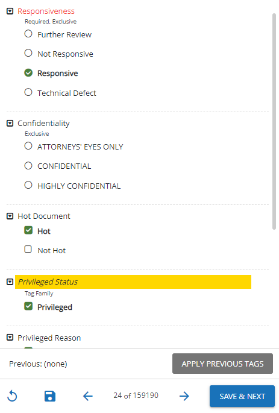
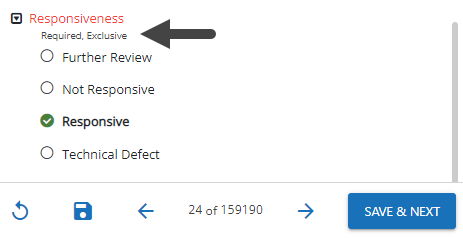

Reviewing documents in a case is a multi-step and iterative process. The review tasks and the order that the review tasks are completed depends on the requirements of your business. After selecting your documents, reviewers may:
Review a document's images, extracted text, metadata, and production history
Analyze related documents, including family documents, duplicates, near duplicates, conceptually similar documents, and documents belonging to the same email thread
Edit document fields as required
Tag documents
Apply mass actions to multiple documents at one time
Apply annotations and redactions to documents
The activities explained in this section require a variety of permissions that are defined by the administrator. If you are not able to perform activities required for your review, please contact your administrator.
Documents can be reviewed within a Review Pass or outside of a Review Pass. Once your documents are selected, the process of reviewing and tagging documents is the same, whether inside or outside of a review pass.
For an overview on how to review documents in a batch, click the video below.
Selecting your Documents
In , click a case card.
Click to open the desired case or select a review pass located on the right side of the funnel graph.
Note: If selecting a Review Pass, the review grid opens with the batch document set, pre-defined relationships, and the coding form/tag palette.
When the review pass is accessed for the first time, the Document Viewer window opens automatically with the first document in the batch.
Edit Document Fields
You can edit the fields of an individual document by performing the following steps.
Double-click a document in the BegDoc field to open the Document Viewer.
In the coding form on the right side of the Document Viewer window, perform any of the following:
Double-click in the field to be edited and make the required changes. Some fields may display gray text to assist with formatting entries, such as the Coding Date field.
For Hyperlink fields, enter or edit the complete path of the linked file. The entry should be a single file path in UNC format (for example, \\server001\files\smith01.msg). To view a linked file, click .
For Pick Lists, click to display the list. Click the desired item. To search for an item in the list enter the search term.
Note: Values may be entered directly into the field that are not included in the pick list. However, these values will not be added to the pick list.
The administrator may add or delete entire pick lists or modify the values of a pick list. Ensure you examine the pick list for any changes.
Optional: If required, a different coding form or review pass may be selected from the Document Viewer window by using the drop-down menu. They are in alphabetical order.
Continue with any additional procedures. When finished, do one of the following actions using the coding form/tag palette navigation toolbar as shown here:
Click to clear the changes.
Click to go to previous document.
Click to go to next document.
Click Save & Next to save changes and go to next document.
Click to save the changes and remain on the document.
Note: If you have made changes and try to navigate to the next or previous document without saving, a pop-up will display to confirm you want to proceed without saving. Click Cancel or OK.
Tag Documents
One of the primary activities when preparing documents
for discovery is applying tags. A tag is a type of “marker” that allows
you to categorize and identify specific document characteristics. Typically defined by your administrator, tags allow
you and your organization to find and identify similar documents—for example,
those that are privileged in some way, or those requiring review by a topic
expert.
Tagging Documents in a Review Pass
Tagging a document enables you to mark the review status for that document as "Reviewed”. In the following image, the document has not yet been tagged, and the "Reviewed" button displays as grayed-out.
To quickly filter the documents in a batch based on their review status, use the Review Status drop-down menu, located above the review grid. By selecting the various options in the drop-down list, you can filter by reviewed documents, unreviewed documents, or all documents.
Note: A batch is not considered complete until every document is marked as Reviewed. However, you are still able to check in an incomplete batch which makes the batch available for other reviewers to check out.
Tagging from the Document Viewer
Select a Document Viewer tab to assist in the review of the document. The tabs, available at the top of the Document Viewer window, include:
Web Viewer
Image
Production
Text
Metadata
Each tab displays a different view of the document, and provides a separate toolbar that allows you to perform various actions depending on the tab selected. For more information on the activities you can complete on the various Document Viewer tabs, see Work with Document Viewer Tabs.
In the tag pane located on the right side below the coding form, do any of the following:
If a tag group is collapsed, expand the tag group by clicking to see the tags. Click to collapse the tag group.

Select all applicable tags by selecting the radio button or check box beside the tag name. Multiple tags may be selected for a group that is not exclusive. Only one tag may be selected in an exclusive group.
Tip: If a keyboard shortcut has been assigned to a tag, you can apply that tag quickly to a document by pressing the keys associated with that shortcut. Ask your administrator if any shortcut keys have been assigned to your tags.
If a tag group is marked as required, you must select at least one tag within the group. The following image shows a tag group that is both required and exclusive.

When finished, do one of the following actions using the coding form/tag palette navigation toolbar as shown here:
Click to clear the changes.
Click to go to previous document.
Click to go to next document.
Click Save & Next to save changes and go to next document.
Click to save the changes and remain on the document.
Note: If you have made changes and try to navigate to the next or previous document without saving, a pop-up will display to confirm you want to proceed without saving. Click Cancel or OK.
Apply Previous Tags
When tagging documents, you can select the "Apply Previous Tags" option to add the tag value set you most recently applied.
To tag a current document with the previously applied tags, perform the following steps:
In the Document Viewer window, select one of the available Document Viewer tabs.
Review the tag pane located on the right side below the coding form to see if there are any tags already applied to the document.
Tip: If a tag group is collapsed, expand the tag group by clicking to see the tags. Click to collapse the tag group.
Click the Apply Previous Tags button, located above the the coding form/tag palette navigation toolbar.
Warning: When selecting the "Apply Previous Tags" option, any tags already selected but not saved may be replaced.
For tag groups that are not exclusive, the tag values in the "Apply Previous Tags" set will be added to the existing selection. For tag groups that are exclusive, in which you can select only one tag, the tag value currently selected will be replaced by the relevant tag value in the "Apply Previous Tags" set. Click in the tag palette navigation toolbar to clear the changes.
Review the tags applied. You can select additional tags by selecting the radio button or check box beside the tag name.
Warning: When applying additional or different tags, the "Apply Previous Tags" tag value set is altered. When next selecting "Apply Previous Tags", all most recently applied tags will be added.
Set a Review Status for the document: Not Reviewed (default), Reviewed, or On Hold.
Note: A batch is not considered complete until every document is marked as Reviewed. However, you are still able to check in an incomplete batch which makes the batch available for other reviewers to check out.
When finished, do one of the following actions using the coding form/tag palette navigation toolbar as shown here:
Click to clear the changes.
Click to go to previous document.
Click to go to next document.
Click Save & Next to save changes and go to next document.
Click to save the changes and remain on the document.
Note: If you have made changes and try to navigate to the next or previous document without saving, a pop-up will display to confirm you want to proceed without saving. Click Cancel or OK.
Warning: When clicking Save & Next or navigating to the previous and/or next document, the selected tags are saved as the most recent tag value set and applied when next selecting "Apply Previous Tags".
Apply Mass Actions
Mass Actions are actions performed on multiple documents at one time, such as populating coding fields, OCRing documents, printing to PDF, and/or applying tags. The following sections cover the process of applying tags to multiple documents, as well as editing field values across multiple records, through mass action. For more information about other mass actions you can perform in Review, see Work with Mass Actions.
Tag Documents from the Results Grid
Complete the steps described in Select Documents for Mass Action.
In the Actions drop-down menu, select
Tag Documents.
In the
resulting dialog box, make the following selections:
Tag
group: select the applicable tag group .
Tags:
select or clear individual tags. To leave tags that have already been
applied unchanged, leave the option box as-is.
See the following figure for details:
Click .
Repeat this procedure for other groups of documents
that must be tagged in the same way.
Tag Related Documents in the Document Viewer
If you have the permissions required to do so, use the
following procedure to tag related documents in the same way all at once.
Mass actions can be performed from any relationship menu except for Document History. See Overview: Relationships for more information.
Select a relationship tab, along the left pane of the Document Viewer window, to locate related documents and to perform mass actions. Using the left pane relationship tabs, you can search for:
Family documents
Duplicates
Near Duplicates
Documents belonging to the same email thread
Document history
Conceptually similar documents
See Overview: Relationships for more information on searching for related documents.
Expand the desired relationship menu and pin it in place by clicking .
Select the check box to the left of the field columns to display the Mass Action button as shown in the following figure. All items are selected.
Do any of the following:
Clear items to be excluded for mass actions.
Clear the check box to the left of the field columns to clear all items in the menu.
Select individual items for mass actions.
Click Mass Action to display the coding form/tag palette dialog box as shown in the following figure.
Note: Coding form rules are not enforced when tags are applied in this manner.
Do any of the following:
Modify the coding form fields as required.
Select the applicable tag group.
Add individual tags by moving the slider over to the right:
Remove tags by moving the slider to the left:
Note: When the slider control is left in the center, the tag remains unchanged:
Click Apply. The Mass Action dialog box closes and applies the fields/tags to the selected documents. The previously selected documents in the selected Relationship menu revert to the default status; they are all cleared. The coding form/tag palette reflects the changes made in the Mass Actions dialog box.
Note: A prompt may display if invalid characters and/or formats are entered in the coding form or if the number of characters exceed the amount allowed for a field.
Apply Redactions
Redactions obscure the content of image files so that only appropriate
information is visible in the files you prepare for discovery. In , up to 99 redaction categories—with different colors and labels
for each—may be used. Redactions are viewed in as solid (if user has appropriate permissions). For detailed information on applying redactions, see Apply Redactions.

 to open the desired case or select a review pass located on the right side of the funnel graph.
to open the desired case or select a review pass located on the right side of the funnel graph.

 .
.  to display the list. Click the desired item. To search for an item in the list enter the search term.
to display the list. Click the desired item. To search for an item in the list enter the search term.


 to clear the changes.
to clear the changes. to go to previous document.
to go to previous document. to go to next document.
to go to next document. to save the changes and remain on the document.
to save the changes and remain on the document.


 to see the tags. Click
to see the tags. Click  to collapse the tag group.
to collapse the tag group.


 .
. .
.